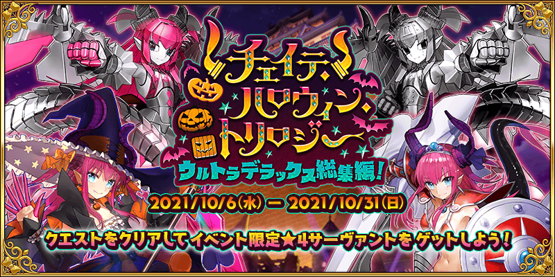

本活動是在2015年舉辦的期間限定活動「歌詠南瓜城的冒險 ～狂亂派對2015～」、在2016年舉辦的期間限定活動「萬聖節・歸來！ 超極☆大南瓜村 ～接著邁向冒險……～」、在2017年舉辦的期間限定活動「萬聖節・強襲！ 魔之建築攀登者／姬路城大決戰」的「可做為總集篇回顧故事部分」的活動。
※本活動為只有主線關卡的活動。
舉辦期間限定活動「恰赫季斯・萬聖節・三部曲 超豪華總集篇！」！
在2015年～2017年為止舉辦的萬聖節活動做為總集篇送上！
為了拯救只完全忘記萬聖節事件的御主，模擬歴代萬聖節會場的特別萬聖節舞台在迦勒底登場！
回顧過去的萬聖節，御主試著取回失去的記憶，但……？
本活動中，推進主線關卡的話可享受過去舉辦的萬聖節活動故事。
另外推進主線關卡後除了活動限定從者「★4(SR)伊莉莎白・巴托里〔萬聖節〕」與「★4(SR)伊莉莎白・巴托里〔Brave〕」正式加入外，通過特定主線關卡後開放的『【只限一邊！】「機械伊莉醬」獲得關卡』跟『【只限一邊！】「機械伊莉醬Ⅱ號機」獲得關卡』通過後可獲得活動限定從者「★4(SR)機械伊莉醬」「★4(SR)機械伊莉醬Ⅱ號機」其中1位。
※本頁面皆為開發中圖片。會有與實際圖片相異的情況。
◆活動舉辦期間◆
2021年10月6日(三) 17:00～10月31日(日) 11:59
◆活動參加條件◆
滿足以下條件的御主才能參加
・通過「第一特異點 邪龍百年戰爭 奧爾良」
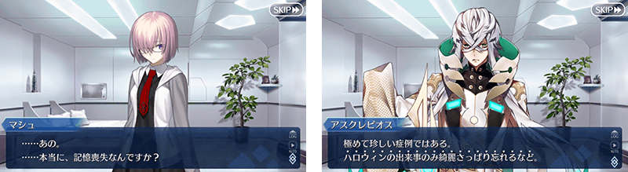
◆在期間限定活動「恰赫季斯・萬聖節・三部曲 超豪華總集篇！」中注意點◆
※關於本活動中能獲得的活動限定從者的寶具強化用卡面、從者硬幣預定能在預定10月新萬聖節活動入手。
※本活動中，可將活動限定從者強化至最終再臨。
在過去活動舉辦時已正式加入的情況，不在此限。
※通過本活動所有主線關卡的話，會登錄到期間限定活動「歌詠南瓜城的冒險 ～狂亂派對2015～」、期間限定活動「萬聖節・歸來！ 超極☆大南瓜村 ～接著邁向冒險……～」、期間限定活動「萬聖節・強襲！ 魔之建築攀登者／姬路城大決戰」的故事圖鑑(マテリアル)。
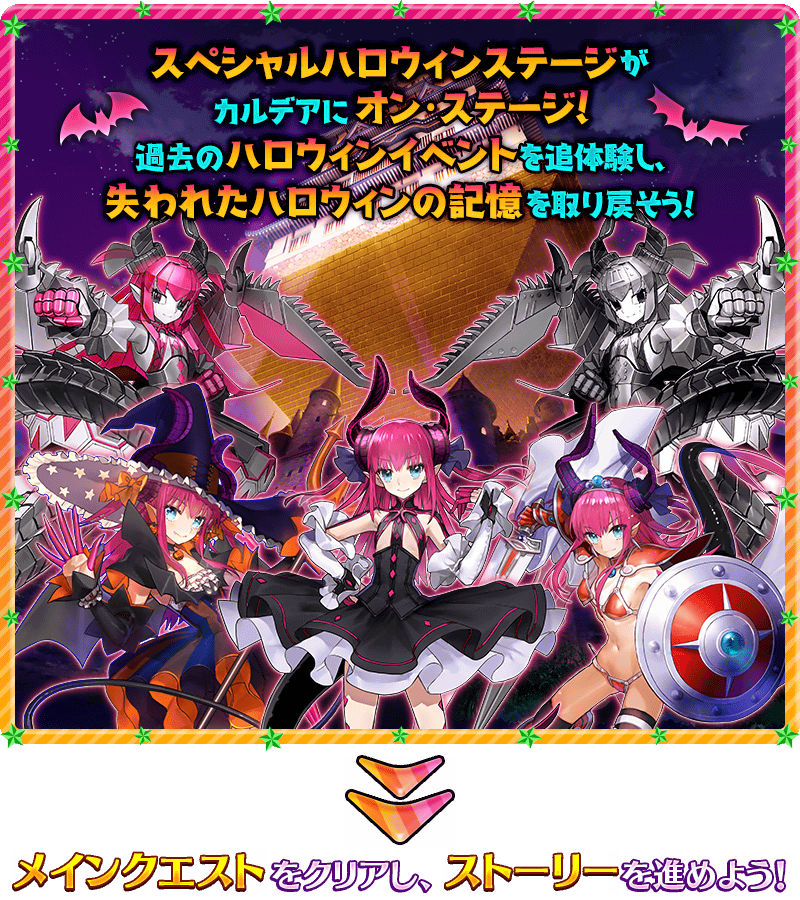 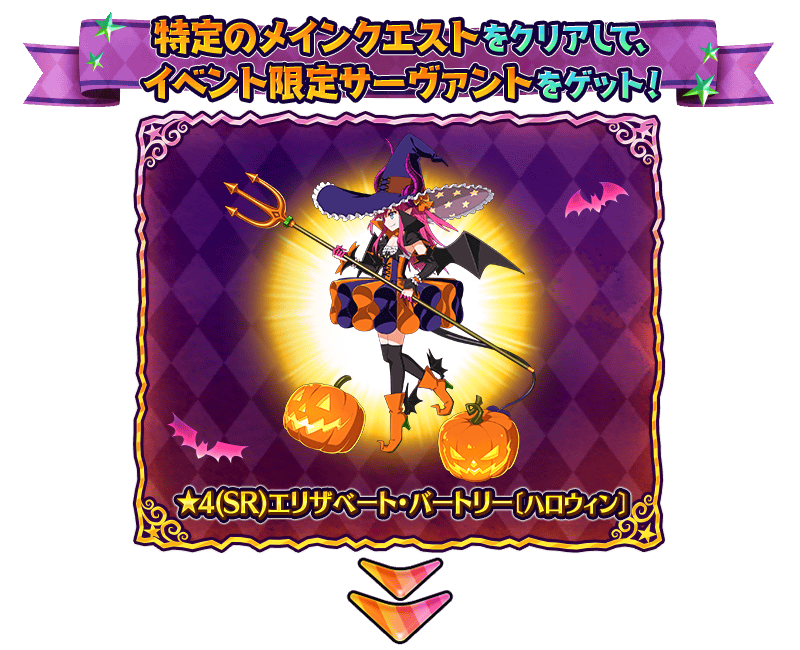 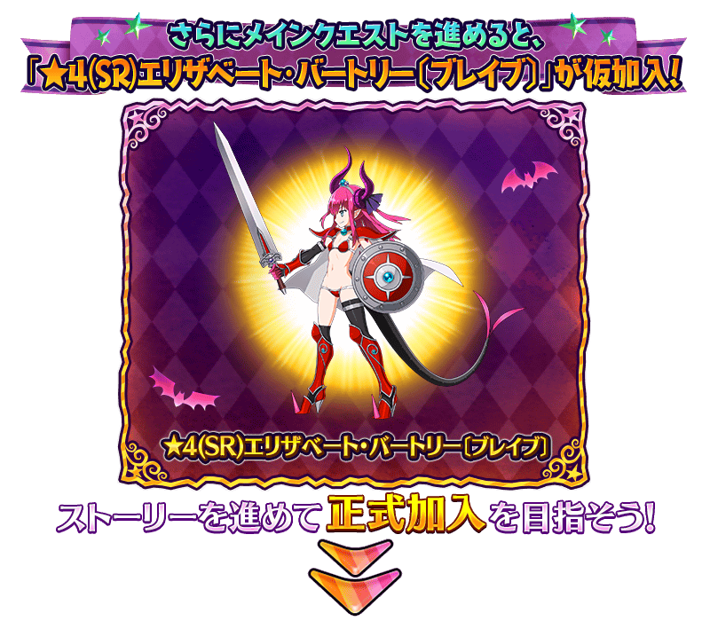 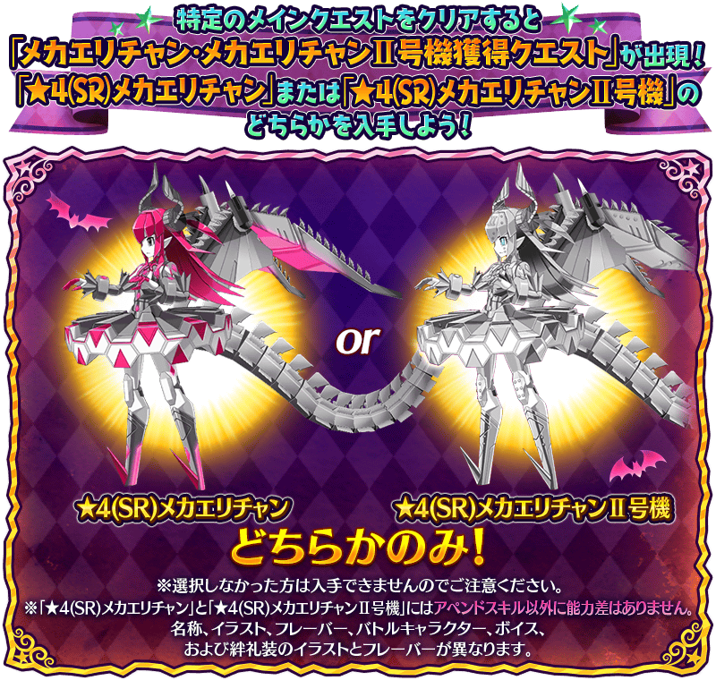
通過本活動特定主線關卡的話，會開放『【只限一邊！】「機械伊莉醬」獲得關卡』與『【只限一邊！】「機械伊莉醬Ⅱ號機」獲得關卡』。
在『【只限一邊！】「機械伊莉醬」獲得關卡』與『【只限一邊！】「機械伊莉醬Ⅱ號機」獲得關卡』沒有戰鬥，選擇任一邊關卡通過的話可獲得「★4(SR)機械伊莉醬」或「★4(SR)機械伊莉醬Ⅱ號機」其中1位。
※敬請注意通過關卡後，未選擇的另一邊關卡會消失。
【10月6日(三) 17:00追記】
下述的期間中，強化「★4(SR)伊莉莎白・巴托里〔Brave〕」「★4(SR)伊莉莎白・巴托里〔萬聖節〕」「★4(SR)機械伊莉醬」「★4(SR)機械伊莉醬Ⅱ號機」時的獲得經驗值變成2倍。
是讓成為對象從者等級一口氣上升的機會！
◆舉辦期間◆
2021年10月6日(三) 17:00～10月31日(日) 11:59

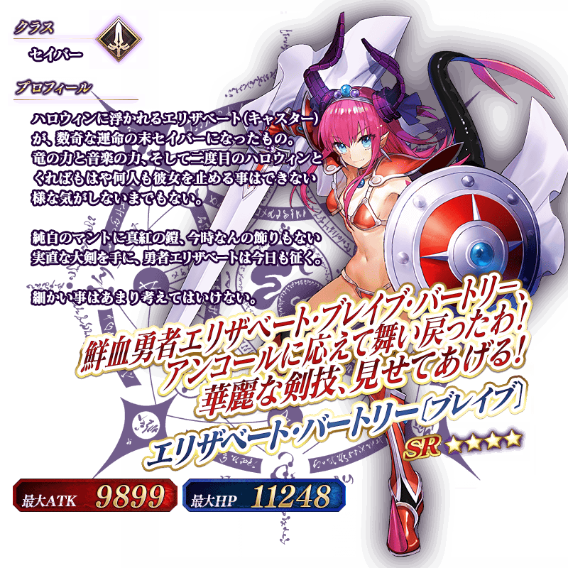
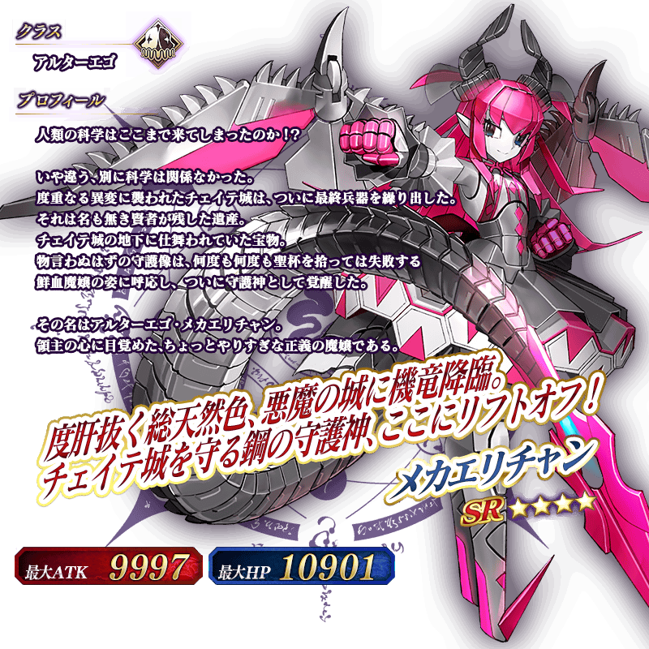
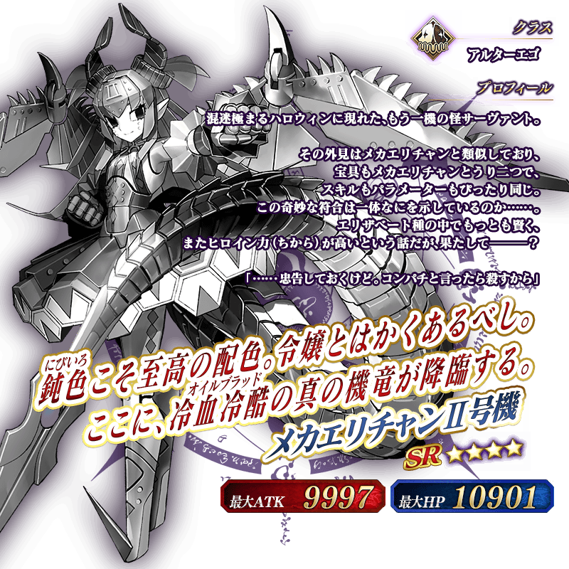
◆靈基再臨◆
使用能靠活動主線關卡的通過報酬入手的「閃爍糖果(ティンクルキャンディ)」「龍之寶玉(竜のオーブ)」「B能量塊(Bペレット)」，重複4次靈基再臨的話，卡面會有所變化！
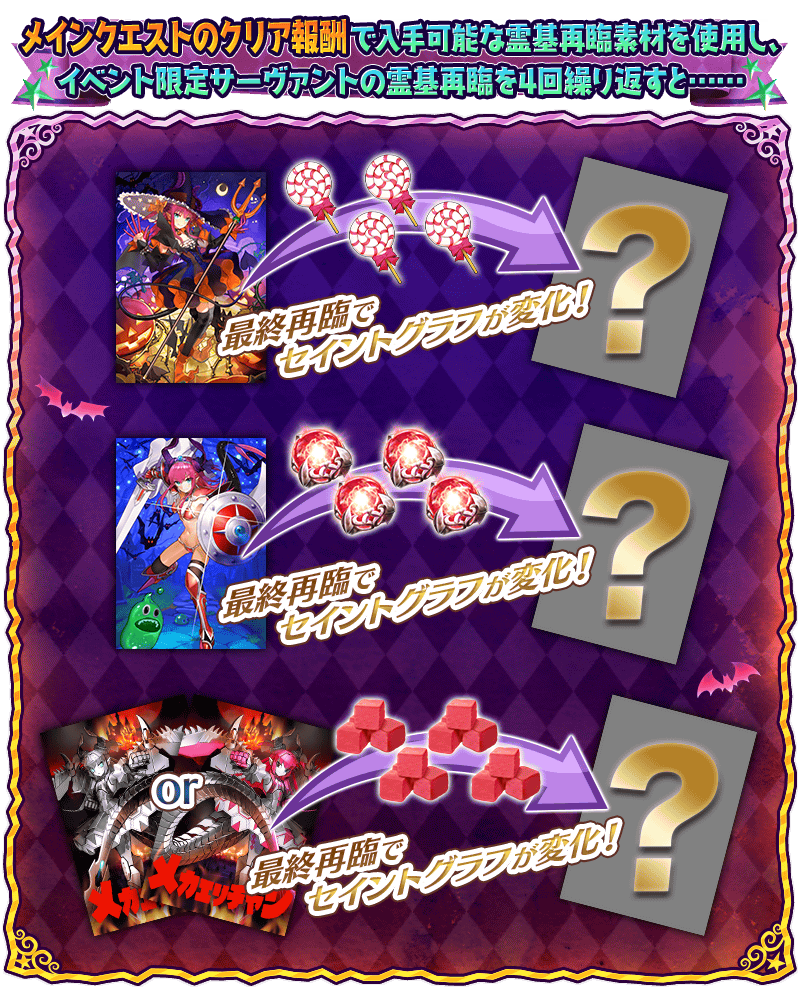
※「★4(SR)伊莉莎白・巴托里〔萬聖節〕」「★4(SR)伊莉莎白・巴托里〔Brave〕」「★4(SR)機械伊莉醬」「★4(SR)機械伊莉醬Ⅱ號機」不會隨靈基再臨使戰鬥角色的外觀變化。
※持有最終再臨過「★4(SR)機械伊莉醬」及「★4(SR)機械伊莉醬Ⅱ號機」的情況，達文西工房的「特殊靈基再臨素材販賣」中變得可將靈基再臨素材「B能量塊(Bペレット)」交換成QP。
10月6日(三) 17:00追記
◆再入手特典◆
在過去舉辦的期間限定活動「歌詠南瓜城的冒險 ～狂亂派對2015～」「萬聖節・歸來！ 超極☆大南瓜村 ～接著邁向冒險……～」「萬聖節・強襲！ 魔之建築攀登者／姬路城大決戰」中入手過「★4(SR)伊莉莎白・巴托里〔萬聖節〕」「★4(SR)伊莉莎白・巴托里〔Brave〕」「★4(SR)機械伊莉醬」「★4(SR)機械伊莉醬Ⅱ號機」的情況，在本活動能獲得再入手特典。
入手第6位以後的各活動限定從者時，就贈送稀有稜鏡1個至禮物箱。
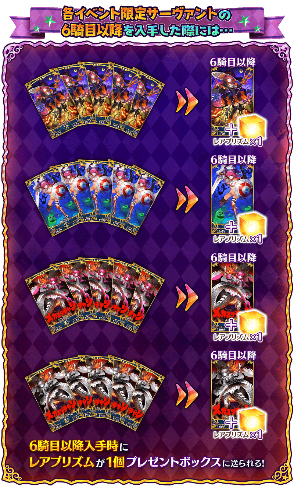
介紹「★4(SR)伊莉莎白・巴托里〔萬聖節〕」「★4(SR)伊莉莎白・巴托里〔Brave〕」「★4(SR)機械伊莉醬」「★4(SR)機械伊莉醬Ⅱ號機」的寶具演出！
「★4(SR)伊莉莎白・巴托里〔萬聖節〕」「★4(SR)伊莉莎白・巴托里〔Brave〕」「★4(SR)機械伊莉醬」「★4(SR)機械伊莉醬Ⅱ號機」的寶具演出於一部份裝置有對應全螢幕顯示。
【★4(SR)伊莉莎白・巴托里〔萬聖節〕】
【★4(SR)伊莉莎白・巴托里〔Brave〕】
【★4(SR)機械伊莉醬】
【★4(SR)機械伊莉醬Ⅱ號機】
【10月6日(三) 17:00追記】
在2021年10月6日(三)維修後反映的更新內容之中，介紹代表性的內容。
◆追加時間◆
2021年10月6日(三) 17:00～
在關卡開始時更容易選擇上次使用的隊伍
修改成在每個關卡都會保存上次使用的隊伍編號，在下次關卡開始時的隊伍確認畫面中會在上次使用的隊伍顯示「前回使用」記號。 ※保存的只有隊伍編號，不保存隊伍的內容。 ※上次使用情報保存的關卡數有上限，超過上限的情況會從最久的上次使用情報刪除。
另外，追加在關卡開始時自動選擇上次使用隊伍的遊戲選項。
此設定ON的話，在進行多個關卡時，減少切換適合各關卡隊伍的不便。
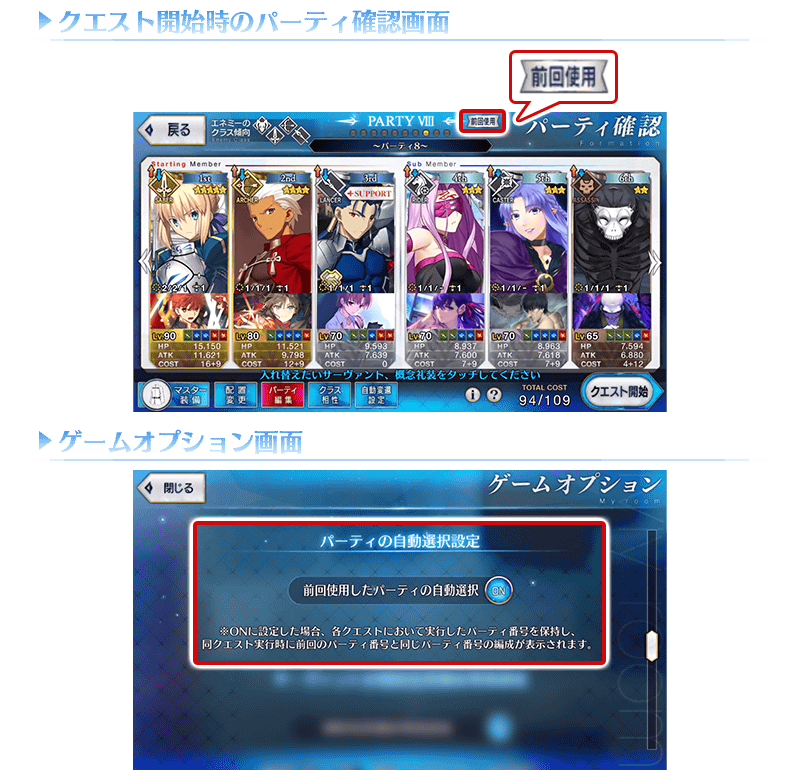
技能等級提升時的演出修改成能跳過
自從者技能強化畫面顯示保有技能強化時的演出，修改成點擊畫面後可跳過。 ※今後的遊戲更新預定對應寶具等級提升，附加技能等級提升等。
支援選擇畫面的「列表更新」鍵的UI調整
為了更容易點擊，調整支援選擇畫面的「列表更新」鍵的位置與設計。
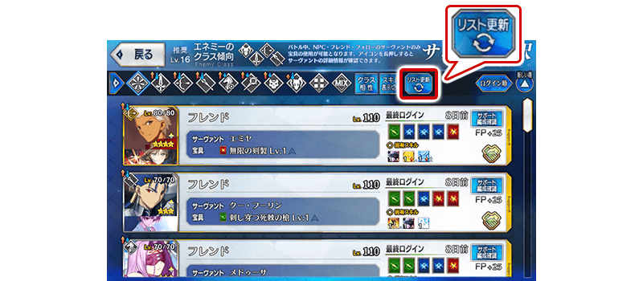
【10月13日(三) 17:00追記】
其他還有，
・恰赫季斯・萬聖節・三部曲Pick Up召喚(每日交替)
・萬聖節回歸宣傳活動
以期間限定舉辦中！
並且，期間限定活動「萬聖節・崛起！ ～砂塵女王與暗黑使徒～」也預定舉辦！
關於詳情，請自下述橫幅確認。
■「恰赫季斯・萬聖節・三部曲Pick Up召喚(每日交替)」詳細情報

■「萬聖節回歸宣傳活動」詳細情報

■「萬聖節・崛起！ ～砂塵女王與暗黑使徒～」詳細情報 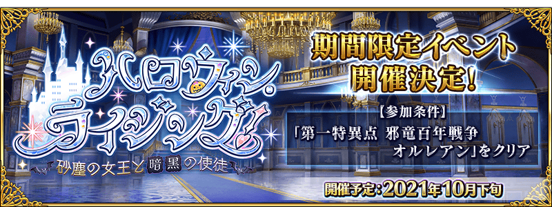